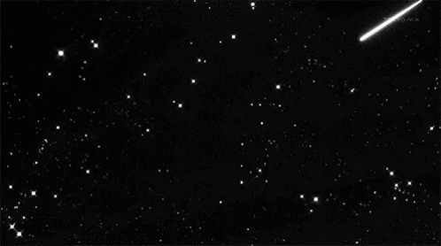
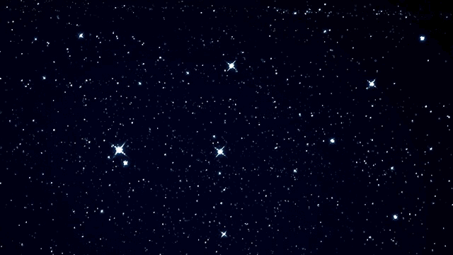
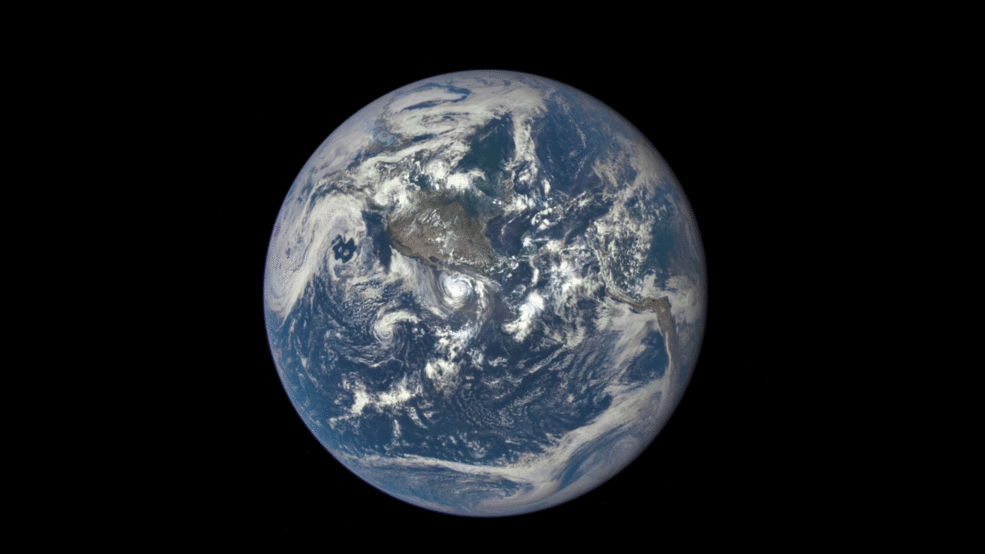
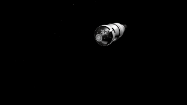
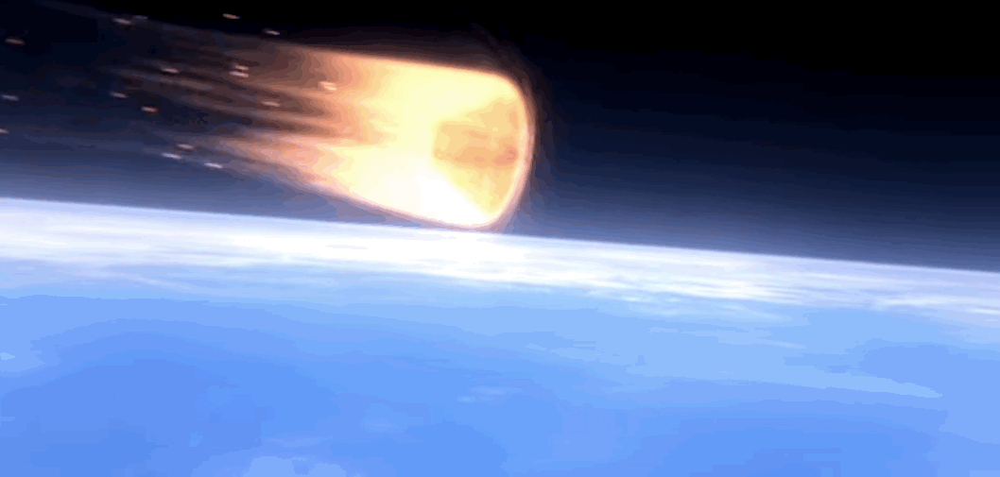
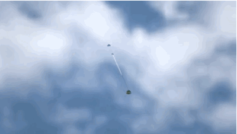
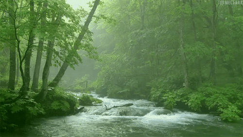

Eject!

You pull the lever and feel your craft launch outward towards the edge of the atmosphere. As you sail straight up, you watch the rest of your rocket dissolve in the atmosphere below you.
You sit back and rest as it will still be a long journey to Earth, you will have plenty of time to adjust your course along the way.

You are finally on the last leg of your journey and earth looms large in your thoughts. You picture its bright atmosphere and starry lights as you cruise through the black void of space.


You float for many days and slowly adjust your trajectory. The space between Mars and Earth is pretty much empty so despite the intensity of your situation, you are able to remain calm and entertained during the trip. As you float closer and closer, you watch the Earth grow in the distance.

You ready your ship, and you get ready for your descent. Earth's atmosphere is much thicker meaning it will take longer to get through, but will give you much more maneuverability. As you check your gages and prepare, the Moon passes in front of Earth one last time before your descent. You double check your landing checklist one last time.

- Thrusters
- Heatsheild Cooling
- Parachute

You're going to need to be as light as possible, so you ditch your last booster, and cruise into Earths high orbit atmosphere in a small craft that is mostly just a heat shield.

Unfortunately you did not have enough fuel to be precise with your landing location Earth, but you've steered away from any oceans of lakes where you would not be found or recovered. You feel yourself hit the atmosphere, all you can do now is wait.

You fall and fall until you hear your parachute deploy and you are yanked down into your seat. You feel the ship decelerate, and you sigh a sigh of relief. You've passed the most dangerous part, and now you main concern is only where you will land.

You land and get out. Earth's gravity pulls heavy on you as the sound of wind and animals overwhelm you.

You are home safe!